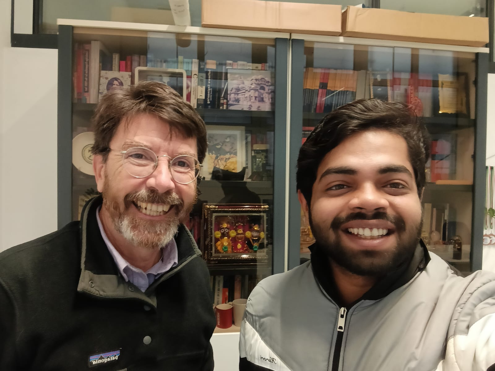
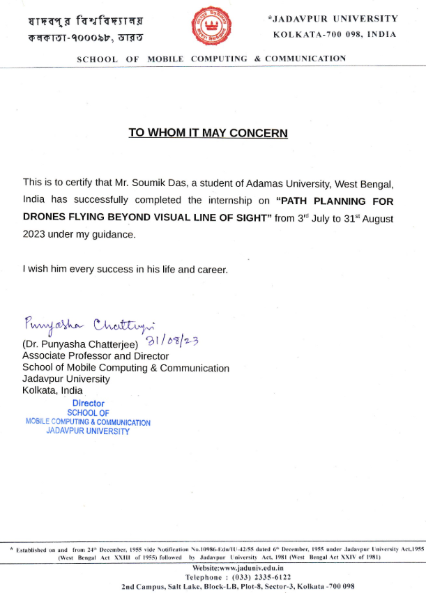

01/10/2025 - 17/12/2025
Campus Scientifico Via Torino 155, 30172 Venice Mestre, Italy
Dipartimento di Scienze Ambientali, Informatica e Statistica
Project Entitled: "A Drone Swarm Protocol for GPS Spoofing Detection"
Supervisor: Prof. Agostino Cortesi, Professor, DAIS, Università Ca Foscari Venezia
Fellowship Amount: € 4100

Along with Prof. Agostino Cortesi
31/07/2023 - 31/08/2025
Jadavpur University Salt Lake Campus, Kolkata – 700106, West Bengal
School of Mobile Computing and Communication
Project Entitled: "Path planning for drones flying beyond visual line of sight (BVLoS)"
Supervisor: Prof. Punyasha Chatterjee, Professor and Director, SMCC, Jadavpur University

Internship Completion Certificate